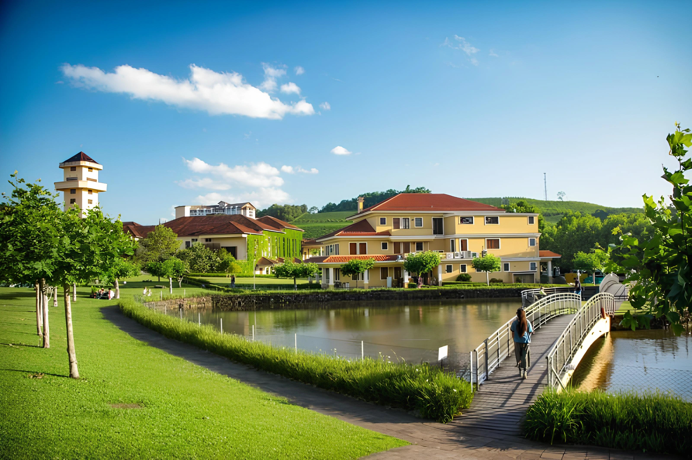
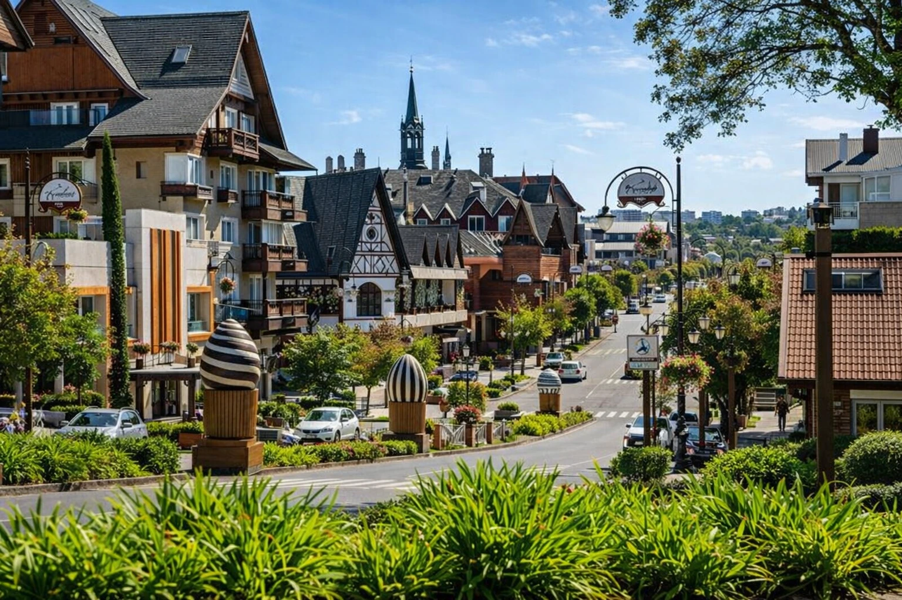
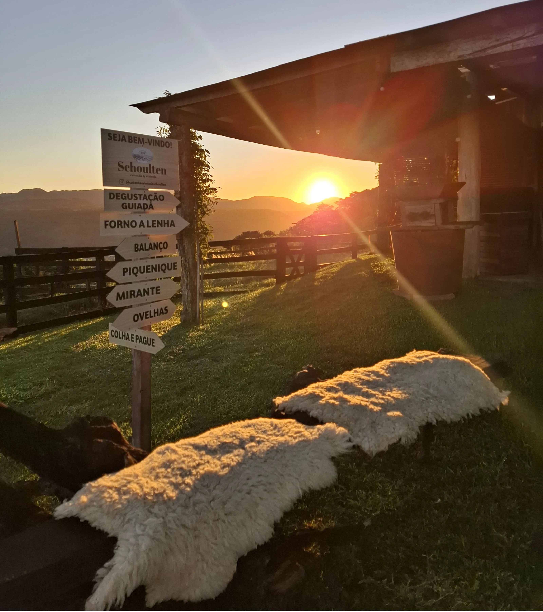
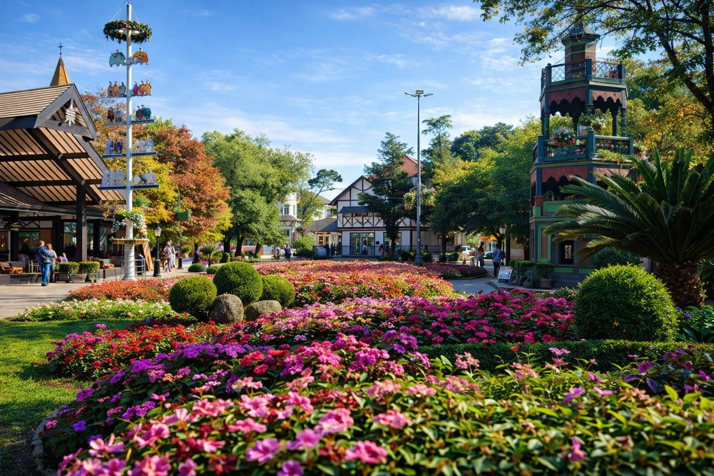
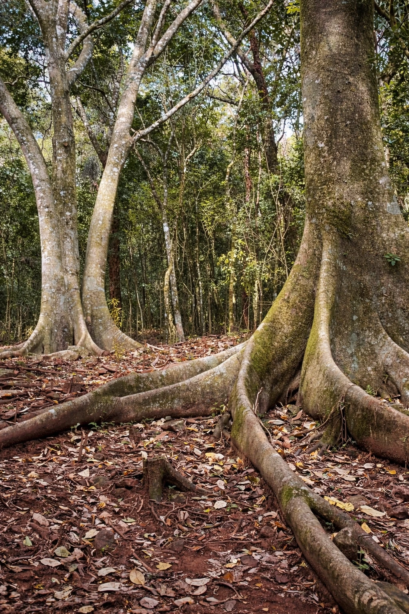

Encanto no Paraíso
Reservar Agora
Encanto no Paraíso
Reservar Agora
Encanto no Paraíso
Reservar Agora
Encanto no Paraíso
Reservar Agora
Você estará no coração de uma das regiões mais belas e completas do Brasil. Veja o que fazer a poucos quilômetros da sua cabana.
Nossa localização estratégica em São Vendelino te coloca no centro de alguns dos destinos mais incríveis do Rio Grande do Sul.

O paraíso do enoturismo brasileiro. Vinícolas premiadas, gastronomia de excelência e paisagens de tirar o fôlego em qualquer estação do ano.

As cidadezinhas mais charmosas do Brasil! Arquitetura europeia, chocolates artesanais, parques temáticos e uma atmosfera mágica durante todo o ano.

Encante-se com a tradição da Vinícola Schoulten, onde cada taça carrega o sabor da Serra Gaúcha. Um ambiente acolhedor que une natureza, história e degustações de vinhos artesanais, ideal para momentos inesquecíveis..

Herança alemã viva e autêntica. Jardins floridos, artesanato, cervejarias artesanais e o famoso Parque do Imigrante revelam a cultura gaúcha em sua essência.
A capital brasileira do vinho. Passeios de trem colonial pelos vinhedos, vinícolas de renome internacional e gastronomia italiana memorável.

A Serra Gaúcha é um convite permanente ao ar livre. Trilhas, cachoeiras, mirantes e parques ecológicos para quem quer respirar fundo e viver a natureza.
Nossa localização em São Vendelino é um ponto de partida ideal para explorar toda a Serra Gaúcha. Em 30 a 90 minutos, você acessa as principais atrações da região.
Pela manhã, visite vinícolas e cachoeiras. À tarde, explore cidades históricas. À noite, retorne para o conforto da sua cabana privativa.
Use nossa cabana como ponto de partida para explorar a região mais encantadora do Rio Grande do Sul.